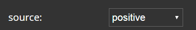
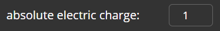
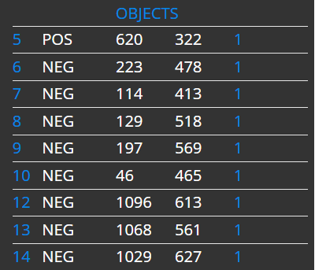
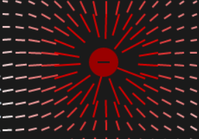
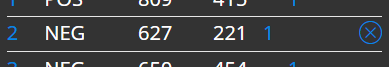
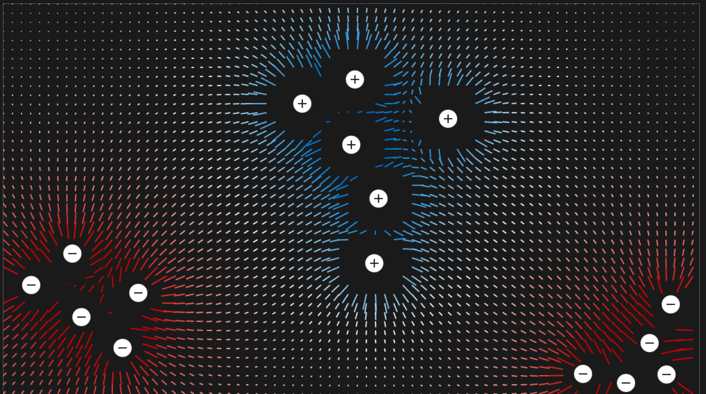
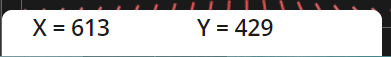

Tematem projektu jest graficzna prezentacja pola elektrycznego generowanego przez ładunki elektryczne. Projekt został zrealizowany jako interaktywna aplikacja, w której użytkownik umieszcza na planszy ładunki i obserwuje zmieniające się potencjał oraz natężenie pola w obszarze wokół ładnuków. Wykorzystano wzory na wartość i kierunek natężenia oraz wartość potencjału pola elektrycznego w punkcie.
Postawowe funkcjonalności aplikacji:
Lista rozwijana 'source' - wybór rodzaju ładunku (dodatni lub ujemny)

Pole do wprowadzenia danych 'absolute electric charge' - określenie bezwględnej wartości ładunku (w jednostach umownych)

przycisk do wygenerowania ładunku - po wypełnieniu pól 'source' i 'absolute electric charge' oraz naciśnięciu przycisku, użytkownik przesuwa kursor na planszę. Lewy przycisk myszki umożliwia umieszcenie obiektu na planszy
przycisk reset - usuwa ładunki z planszy oraz listy obiektów
Lista obiektów umieszonych na planszy 'objects' - zawiera informacje o ID, rodzaju, współrzędnych i wartości ładunku

wskazywanie wybranego elementu - po najechaniu kursorem na element z listy 'objects', odpowiadający mu obiekt na planszy zmienia kolor na bordowy i zwiększa swój rozmiar

usunięcie wybranego obiektu - po najechaniu kursorem na element z listy 'objects', pojawia się przycisk 'x' umożliwiający usunięcie wybranego obiektu z planszy

plansza - składa się z regularnej siatki punktów. W każdym punkcie obliczany jest potecjał oraz natężenie pola elektrycznego. Wartość i kierunek wektora natężenia pola elektrycznego odpowiada kolejno długości i kierunkowi wskaźnika. Wartość potencjału utożsamiana jest z kolorem wskaźnika. Potencjał ujemny reprezentowany jest przez odcienie koloru czerwonego, natomiast potencjał dodatni przez odcienie koloru niebieskiego

współrzędne x i y - współrzędne kursora znajdującego się w obrębie planszy
